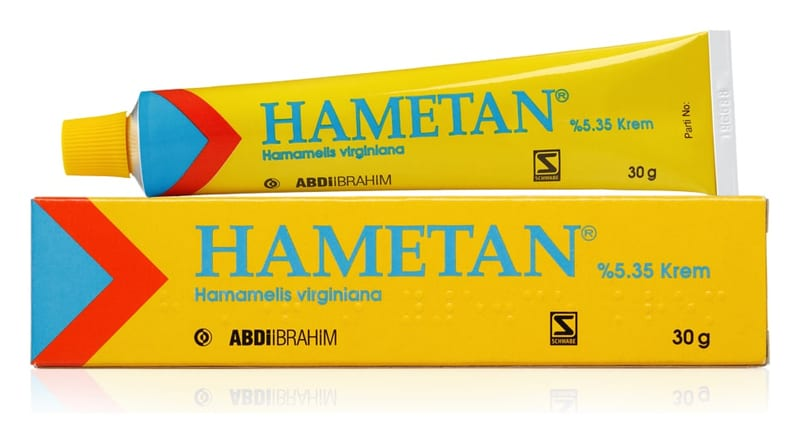

Hametan % 5.35 Krem, 30 g

Ne için kullanılır
KT · Bölüm 1HAMETAN, 30 gramlık alüminyum tüplerde sunulan bir kremdir. HAMETAN, 100 gramında etkin madde olarak 0.64 mg Hamamelis ketonları olarak standardize edilmiş, 5.35 g Hamamelis virginiana (potens 12mg/100g) içerir.
HAMETAN’ın bileşimindeki Hamamelis virginiana; astrenjan (doku büzücü), lokal hemostatik (kanamayı durdurucu) ve antiinflamatuvar (iltihap giderici) etkilere sahiptir. Astrenjan etkisi ile; deriye ait yaralanmaları takiben, söz konusu bölgede deri proteinlerinin çökmesini sağlayarak doku büzücü ve kalınlaştırıcı etki gösterir.
Lokal hemostatik etkisi ile; deriye ait yaralanmaları takiben, söz konusu bölgede kanama süresini kısaltır, pıhtılaşma sürecini hızlandırır. Antiinflamatuvar etkisi ile; derideki iltihaba ait belirti ve bulguları giderir.
HAMETAN; - Bebeklerin ve küçük çocukların pişiklerinde - 1. ve 2. derece yanıklarda / güneş yanıklarında - Çizik ve kesik gibi yüzeysel deri lezyonlarında - Emziren annelerde meme başı çatlaklarının bakımı ve korunmasında - Kurumuş, çatlamış, yarılmış derinin bakımı ve korunmasında [yaşlı kimselerin derisi dahil ] kullanılır.